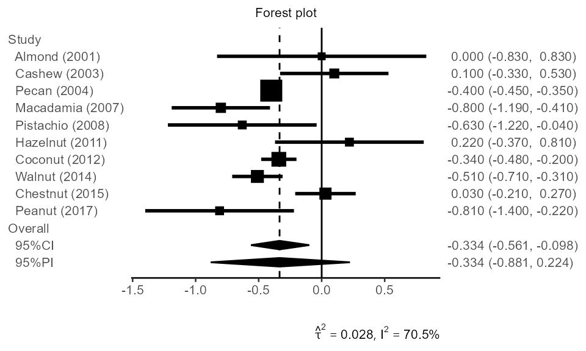
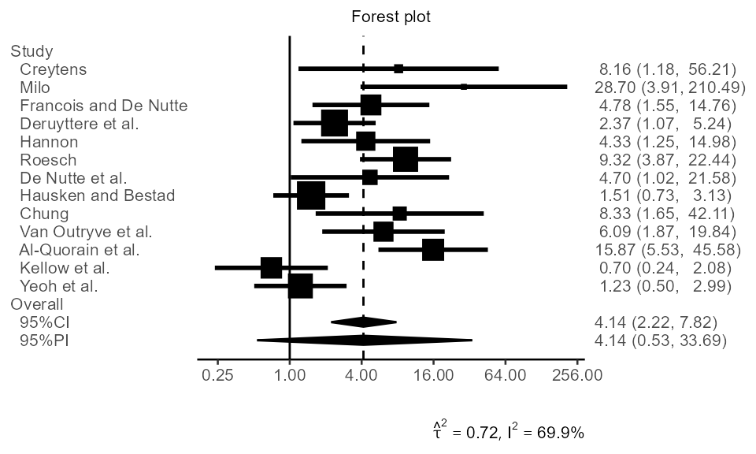

Introduction to the `pimeta` package
Kengo Nagashima
2025-03-05
pimeta.RmdThe pimeta package is easy. Load your data and then pass
it the pima function!
library("pimeta")
library("ggplot2")
data(sbp, package = "pimeta")
# a parametric bootstrap prediction interval
piboot <- pima(
y = sbp$y, # effect size estimates
se = sbp$sigmak, # within studies standard errors
B = 25000, # number of bootstrap samples
seed = 14142135, # random number seed
parallel = 4 # multi-threading
)
piboot##
## Prediction & Confidence Intervals for Random-Effects Meta-Analysis
##
## A parametric bootstrap prediction and confidence intervals
## Heterogeneity variance: DerSimonian-Laird
## Variance for average treatment effect: Hartung (Hartung-Knapp)
##
## No. of studies: 10
##
## Average treatment effect [95% prediction interval]:
## -0.3341 [-0.8807, 0.2240]
## d.f.: 9
##
## Average treatment effect [95% confidence interval]:
## -0.3341 [-0.5613, -0.0985]
## d.f.: 9
##
## Heterogeneity measure
## tau-squared: 0.0282
## I-squared: 70.5%
##
## Estimated cumulative probability of effect `theta_new`
## Pr(theta_new < 0): 0.9116
plot(piboot, base_size = 10, studylabel = sbp$label)
Several type of methods ("HTS", "HK",
"SJ", …) are supported.
# Higgins-Thompson-Spiegelhalter prediction interval
pima(sbp$y, sbp$sigmak, method = "HTS")##
## Prediction & Confidence Intervals for Random-Effects Meta-Analysis
##
## Higgins-Thompson-Spiegelhalter prediction and confidence intervals
## Heterogeneity variance: DerSimonian-Laird
## Variance for average treatment effect: approximate
##
## No. of studies: 10
##
## Average treatment effect [95% prediction interval]:
## -0.3341 [-0.7598, 0.0917]
## d.f.: 8
##
## Average treatment effect [95% confidence interval]:
## -0.3341 [-0.5068, -0.1613]
## d.f.: 9
##
## Heterogeneity measure
## tau-squared: 0.0282
## I-squared: 70.5%
##
## Estimated cumulative probability of effect `theta_new`
## Pr(theta_new < 0): 0.9460The convert_bin() function converts binary outcome data
to effect size estimates and within studies standard errors vectors. A
data set of 13 placebo-controlled trials with cisapride that was
reported by Hartung and Knapp (Stat Med., 2001, doi:10.1002/sim.1009) was
analyzed below. Estimated values on the logarithmic scale can be
back-transformed to the original scale with the trans
option (in print and plot).
m1 <- c(15,12,29,42,14,44,14,29,10,17,38,19,21)
n1 <- c(16,16,34,56,22,54,17,58,14,26,44,29,38)
m2 <- c( 9, 1,18,31, 6,17, 7,23, 3, 6,12,22,19)
n2 <- c(16,16,34,56,22,55,15,58,15,27,45,30,38)
dat <- convert_bin(m1, n1, m2, n2, type = "logOR")
head(dat, n = 3)## y se
## 1 2.098986 0.9847737
## 2 3.357026 1.0165653
## 3 1.565232 0.5747840##
## Prediction & Confidence Intervals for Random-Effects Meta-Analysis
##
## A parametric bootstrap prediction and confidence intervals
## Heterogeneity variance: DerSimonian-Laird
## Variance for average treatment effect: Hartung (Hartung-Knapp)
##
## No. of studies: 13
##
## Average treatment effect [95% prediction interval]:
## 4.141 [0.533, 33.692]
## d.f.: 12
## Scale: exponential transformed
##
## Average treatment effect [95% confidence interval]:
## 4.141 [2.224, 7.820]
## d.f.: 12
## Scale: exponential transformed
##
## Heterogeneity measure
## tau-squared: 0.718
## I-squared: 69.9%
##
## Estimated cumulative probability of effect `theta_new`
## Pr(theta_new < 0): 0.075
binlabel <- c(
"Creytens", "Milo", "Francois and De Nutte", "Deruyttere et al.",
"Hannon", "Roesch", "De Nutte et al.", "Hausken and Bestad",
"Chung", "Van Outryve et al.", "Al-Quorain et al.", "Kellow et al.",
"Yeoh et al.")
plot(pibin, digits = 2, base_size = 10, studylabel = binlabel, trans = "exp")
Save a plot to PNG:
png("forestplot.png", width = 500, height = 300, family = "Arial")
plot(piboot, digits = 2, base_size = 18, studylabel = sbp$label)
dev.off()or